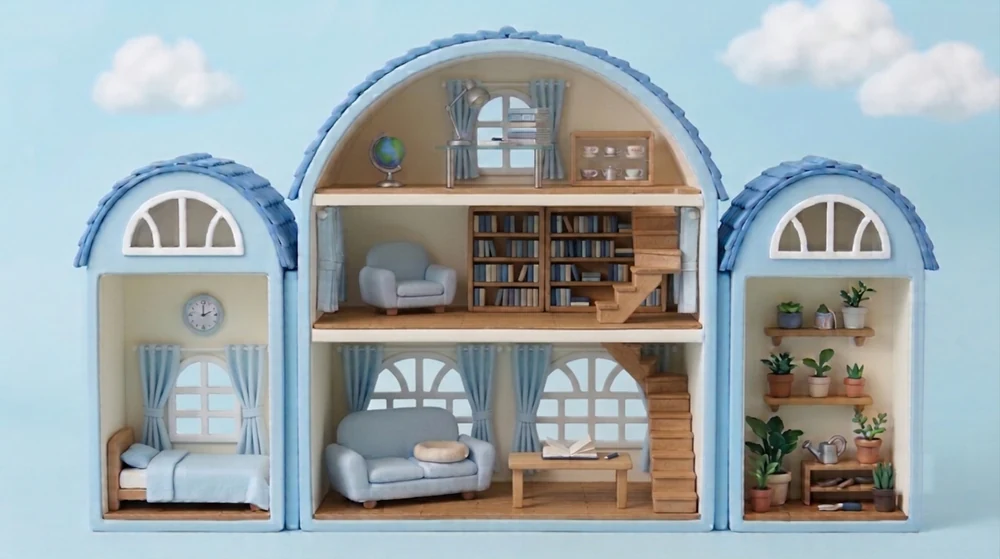
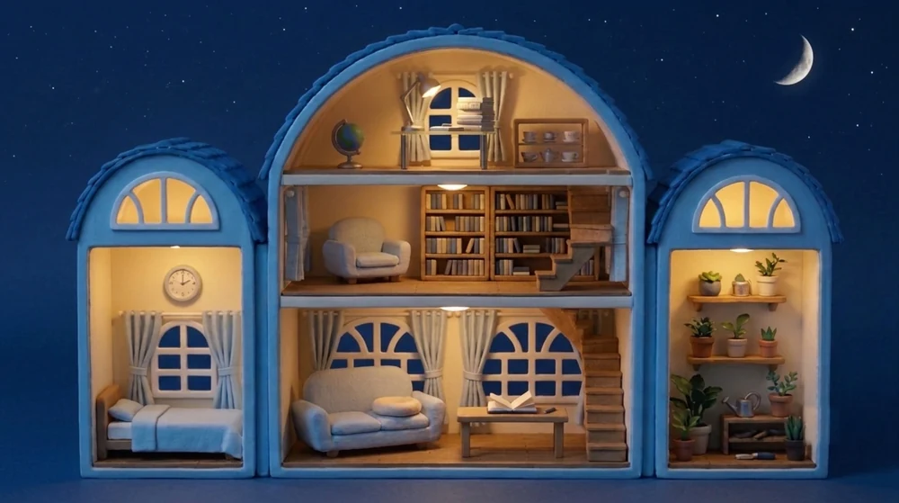

하다하우스 — 아이의 루틴 집
루틴 하우스를 본 아이가 「내 것도」 하고 청해 하루 만에 세운 자매판입니다. 집 모양은 아이가 그린 스케치가 정본이고, 방 일곱 개도 아이가 직접 정했습니다. 아이 노트북에서 비밀번호 하나로 들어가 방마다 기록하고, 기록은 아침에 부모 노트북이 내려받습니다. 첨삭은 내려받은 노트에 직접.
🔒 ella.pognaru.com 열기 →스케치대로 지은 집
둥근 지붕 다락에 2층·1층, 양옆으로 아치 지붕의 포켓하우스 둘. 1판은 둥지의 집 그림 위에 방만 옮겼다가 「그림 초안 준 거랑 너무 다르다」로 돌아왔고, 스케치 꼴을 따른 2판이 한 번에 통했습니다. 밤 불빛은 처음 「흰 LED」였다가 그림이 낸 노란빛을 아이가 그대로 두기로 했습니다.


아이가 정한 일곱 방
기록은 세 가지 꼴뿐입니다 — 스탬프 하나, 제목과 숫자, 그리고 글. 아이 기록은 어디에도 공개되지 않고 깃에도 올라가지 않습니다.
유리 테이블에 앉아 숙제. 하루 한 번 스탬프가 달력에 찍힙니다.
안락의자에 앉아 책. 제목과 읽은 페이지를 적습니다.
재미로 여러 번 눌러도 됩니다. 기록은 남기지 않습니다.
글감 없이 자유롭게. 쓴 글은 노트로 저장되고, 첨삭은 내려받은 노트에서 합니다.
「자러 가요」를 누른 시각만. 인형이 침대에 눕습니다.
스탬프는 토마토 모양으로 — 아이의 주문입니다.
자전거 타기. 뒷자리 바구니에 밤톨이를 태웁니다. 처음엔 밤톨이가 따라 뛰었는데 「질질 끌려가는 것 같아」 바구니로 옮겼습니다.
지은 순서
아이의 손그림에서 방 배치와 기록 꼴을 바다가 표로 읽어 확인받았습니다. 「방 배치」만이 아니라 「집 모양」까지 정본으로 읽어야 한다는 걸 1판에서 배웠습니다.
저장소·아침 내려받기·배포는 둥지의 것을 그대로 가져왔고, 잠금만 이메일 대신 비밀번호 하나로 바꿨습니다(아이가 쓰기 쉽게). 그릇은 김리🔨.
앉고 눕는 자세를 조각으로 얹으면 「얹은 티」·「꽂힘」이 남습니다. 집 그림에 인형이 앉은 판을 통째로 받아 방 둘레만 오리는 길로 바꾸고, 나무🌳가 그 조각법을 스크립트로 만들어 새 그림이 오면 파일만 바꿔 다시 돌립니다.
아이의 요청은 부모를 거쳐 오니, 한마디 한마디를 회의 메모에 원문으로 쌓았습니다 — 파자마 핏, 슬리퍼에서 맨발로, 토마토 스탬프, 노란 불빛. 라이브를 본 뒤 고치는 판이 열일곱 번 돌았습니다.
무엇이 예상과 달랐나
- 그림 모델은 「다른 그림과 같은 크기로」를 못 듣습니다(세 번 다 어긋남). 통한 길은 나무가 머리 폭을 자로 재어 인형만 오려 줄인 합성본을 주고 「크기는 지키고 이음매만 다듬어」 — 「줄여라」보다 「지켜라」를 잘 듣습니다.
- 낮 인형에 밤 불빛을 입히는 법은 색이 바래 「여전히 흐릿」했습니다. 밤 네 방은 전부 진짜 밤 그림을 따로 받아 해 질 녘에 바꿔 끼웁니다.
- 아이는 노트북으로만 씁니다. 폰 기준으로 재던 크기를 노트북 화면 기준으로 다시 잡고, 창을 열면 집을 줄이는 대신 그 방으로 다가가게 했습니다.
- 「밤톨이도 같이 자게」는 그림 모델이 세 번 다 소파로 보내서, 결국 「밤톨이는 크니까 소파에서」로 아이가 받아들였습니다.
내 루틴 하우스를 보고 자기 것도 만들어 달라는데.햇살
스케치·방 일곱 · 아이 · 그림 · 햇살(Gemini) · 표·프롬프트·회의 메모 · 바다 🌊 · 화면·조각 스크립트 · 나무 🌳 · 그릇·잠금·아침 루틴 · 김리 🔨
정본은 ella.pognaru.com(비밀번호 잠김 · 레포 POGNARU/ella, 비공개)과 볼트 클로드 에이전트/나무의 기록/261022 엘라의 집 첫 장/회의 메모.md. 이 페이지는 과제 기록 사본입니다. 열려면 로그인이 필요합니다.